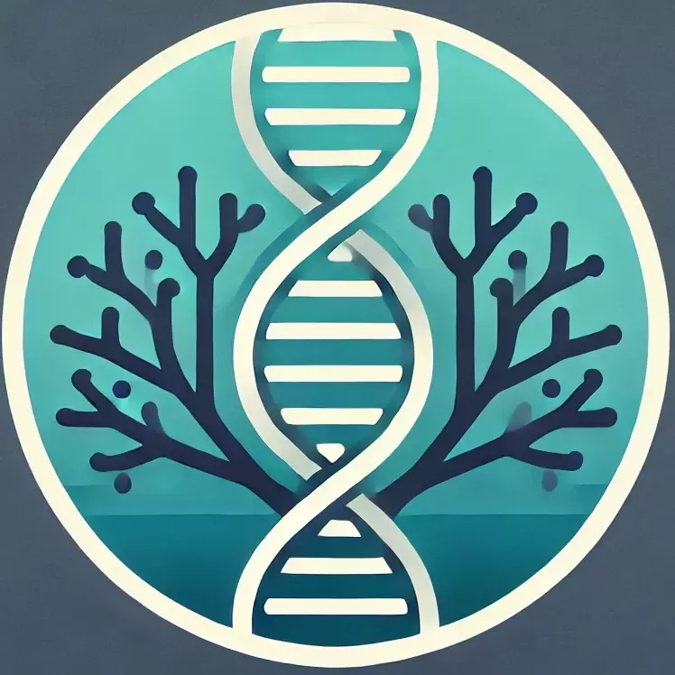

Our mission is to develop protocols that reduce mortality in ornamental tropical marine fish.
Saving the reef, one fish at a time.
Acropora
Labs

Copyright by Acropora Labs, Inc. All Rights Reserved.
Location:
Corte Madera, California
Job Type:
Part-time, Contract
Position Overview:
We are seeking a motivated and highly detail-oriented CRISPR Gene Editing Specialist to join our research team. The primary responsibility will be performing CRISPR-Cas9 somatic gene editing on embryos to induce targeted modifications. The successful candidate will be responsible for the full execution of the gene editing pipeline starting with fertilized eggs provided by an aquaculture specialist. This position will not involve fish breeding or larval rearing duties, but will focus exclusively on the molecular, microinjection, and early developmental stages of the project (including protocol design)
Key Responsibilities:
Design and synthesize sgRNAs targeting pigment-related genes (e.g., tyr, oca2, mitfa) based on project goals.
Assemble CRISPR-Cas9 ribonucleoprotein (RNP) complexes with high fidelity.
Prepare injection reagents, buffers, and maintain RNase-free conditions.
Precisely microinject CRISPR RNP complexes into fertilized clownfish eggs at the one-cell stage.
Operate and maintain stereomicroscopes, micromanipulators, microinjectors, and micropipette pullers.
Calibrate injection volumes (~1 nL) and maintain high embryo survival rates through optimized handling techniques.
Screen embryos and larvae for phenotypic changes (primarily pigmentation differences) using visual inspection and microscopy.
Perform molecular genotyping (PCR, DNA extraction, Sanger sequencing) to validate gene editing outcomes.
Keep meticulous records of all injection sessions, conditions, and outcomes for each clutch processed.
Communicate progress, findings, and troubleshooting recommendations clearly to the project team.
Train research assistant.
Qualifications:
Entrepreneurial. We’re looking for someone that wants to build great things.
1–3 years of hands-on experience with CRISPR-Cas9 genome editing in aquatic or vertebrate embryos (fish experience strongly preferred; zebrafish, medaka, or similar).
Able to design or adapt protocols based on ‘in the field’ conditions.
Willing to work alongside non-biologists, with the patience to teach while doing.
Demonstrated proficiency in microinjection techniques.
Experience with RNA handling and in vitro transcription preferred.
Familiarity with PCR, gel electrophoresis, and DNA sequencing analysis (preferred but not strictly required).
Strong attention to detail, steady hands, and excellent fine motor skills for microinjection work.
Ability to work efficiently under time-sensitive conditions (e.g., during narrow injection windows post-fertilization).
Capacity to follow and optimize protocols independently with minimal supervision.
Excellent documentation, organizational, and communication skills.
Comfortable working collaboratively with aquarists and project scientists.
Nice-to-Have Skills:
Experience working with marine fish embryos specifically.
Familiarity with colorimetric phenotyping or pigment cell biology.
Experience with CRISPR off-target analysis or advanced genome editing techniques (e.g., multiplex editing).
Knowledge of aquatic animal husbandry at the egg/embryo stage.
Work Environment:
Laboratory setting equipped with microinjection rigs, microscopes, molecular biology equipment (upon specification).
Coordination with the aquaculture team handling fish breeding, spawning, and post-hatch rearing.
Some flexibility in schedule is required to accommodate fish spawning times (e.g., afternoon or evening injections may occasionally be needed, although these tend to be within a fairly predictable window... Although it is currently Saturday afternoon).
Compensation:
Commensurate with experience.
How to Apply:
Please submit your resume/CV, a brief cover letter detailing relevant experience with embryo injections and CRISPR editing to jobs (at) acroporalabs.com. In your email, please provide the sum of 8+4.
Corte Madera, California
Job Type:
Part-time, Contract
Position Overview:
We are seeking a motivated and highly detail-oriented CRISPR Gene Editing Specialist to join our research team. The primary responsibility will be performing CRISPR-Cas9 somatic gene editing on embryos to induce targeted modifications. The successful candidate will be responsible for the full execution of the gene editing pipeline starting with fertilized eggs provided by an aquaculture specialist. This position will not involve fish breeding or larval rearing duties, but will focus exclusively on the molecular, microinjection, and early developmental stages of the project (including protocol design)
Key Responsibilities:
Qualifications:
Nice-to-Have Skills:
Work Environment:
Compensation:
Commensurate with experience.
How to Apply:
Please submit your resume/CV, a brief cover letter detailing relevant experience with embryo injections and CRISPR editing to jobs (at) acroporalabs.com. In your email, please provide the sum of 8+4.
Now Hiring - CRISPR Gene Editing Specialist – Aquatic Model